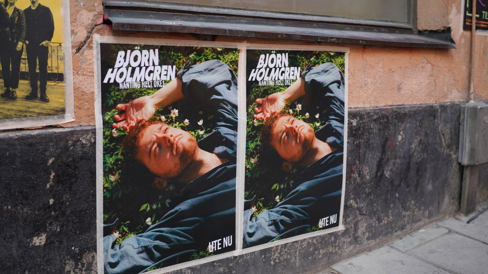
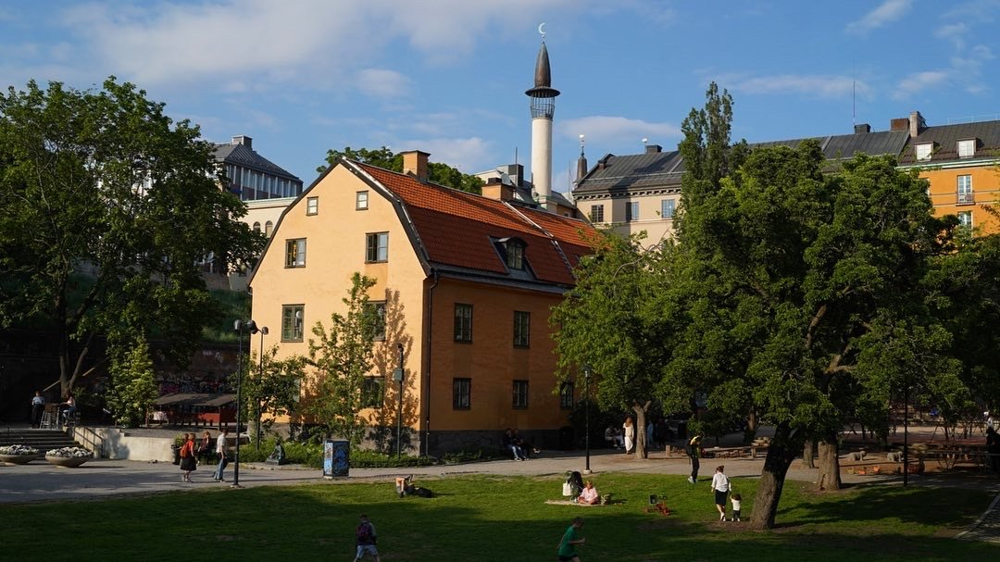

2026.05.01
북유럽 여행의 편린들
Artipelag으로 향하는 선상 위에서 지난 시간을 되뇌여보고 있습니다.
홀백에 머무르며
몰튼 바이시클의 대표, 존의 집에 방문했습니다. 덴마크의 외곽도시인 홀백에 그의 작은 집이 있습니다. 문앞에 정원에 들어서면, 남은 노년의 시간을 준비한 작은 흔적들을 여럿 발견할 수 있습니다. 집 안에 들어서니, 따뜻한 온기가 차가워진 체온을 감쌉니다. 존의 아내가 두툼한 양말을 건네주었고, 나는 그 푸근함에 이내 졸음이 옵니다. 따뜻한 밀크티와 덴마크식 케익과 함께 우리는 지난 시간에 대한 이야기를 나누었습니다.
두 사람은 말레이시아 쿠알라룸프르에서 만나 여기까지 이르렀습니다. 아시아의 어느 도시에서 덴마크인 여자와 영국 남자가 만나 운명을 같이 하기로 한 것입니다. 그리고 그의 마지막 노년은 피요르드 해안이 펼쳐진 맑고 맑은 이 도시가 되었습니다. 도시가 참 맑고 고요합니다. 자동차와 사람이 만들어내는 소음이 없으니, 물결소리, 바람소리, 풀소리가 내 주변을 메웁니다. 나는 도시를 좋아한다고 생각했는데, 자연의 화음이 내 마음을 다른곳으로 이끕니다.
누군가와의 인연으로 여기 이 도시에 혼자 서 있는 것이 운명처럼 느껴집니다. 자연의 팔레트 위에서 나는 내 안의 새로운 나를 발견합니다.
파노말 스튜디오
한국에서 루비워크샵을 방문한 수네와의 인연으로 나는 덴마크 스톡홀름에 위치한 파노말 스튜디오를 방문할 수 있었습니다. 도시의 중심부에 위치한 사무실의 풍경은 브랜드가 지닌 현재의 과제와 미래의 도전을 그대로 드러내주었습니다.
그들의 태도는 한결같았습니다. 냉정하면서도 직설적이었습니다. 그 이유는 그들이 해결해야하는 미션의 목표와 한계를 분명하게 이해하고 있기 때문입니다. 어쩌면 그 냉정함이 솔직함의 다른 표현일지도 모릅니다. 이탈리아인들과 일을 하다보면, 그들의 의중을 파악하기 위해 시간을 많이 써야하는데, 스칸디나비아의 데인족들에겐 그럴 필요가 없습니다.
로직별로 업무별로 아주 간결하게 세팅된 모습을 보며, 나는 다시금 팀 빌딩에 대한 좋은 인사이트를 얻었습니다. 간부급 인재가 아닌 이상 확장성을 기대할 수 없다는 확신을 다시 한 번 더 받았습니다.
Artipelag으로 향하는 선상 위에서
Artipelag으로 향하는 선상 위에서 지난 시간을 되뇌여보고 있습니다. 도시는 한 인간의 생각의 요람입니다. 서울에 있을땐 그렇게 빠르게 흘러갔던 시간이, 런던과 코펜하겐 그리고 스톡홀름으로 갈수록 천천히 그리고 견고하게 흘러갑니다.
시간은 절대적인 의미가 아닌 상대적인 맥락을 갖고 있습니다. 내가 어떤 선택을 하는가에 따라 시간은 그 결을 달리합니다. 여행에서 시간이 상대적으로 천천히 흐르는 이유는 시간을 내가 의미있게, 주도적으로 선택하기 때문입니다. 그리고 잡음으로부터 멀리 떨어져 있기 때문입니다.
이 단순한 이치를 일상과 업무 위에 세워놓지 못하면, 돈과 시간이 나를 잡아먹는 순간이 옵니다. 더 간결하게, 더 견고하게.


좋은 빛의 입자감
6월은 해가 가장 긴 백야의 시간입니다. 빛이 투명하고 맑고 밝다는 것이 눈으로 느껴지고, 그 느낌은 고스란히 사진으로 투영됩니다. 아마도 오랜시간 스웨덴에 거주한 데인인들은 그들이 얼마나 색과 그 경계에 민감한지 잘 모를 것입니다. 마치 내가 서울이 얼마나 크고 웅장한 도시인것을 몰랐듯이 말입니다.
스칸디나비안 디자인이라 불리는 모든 것들의 분모에는 이 투명한 빛과 백야의 그늘인 겨울에서 시작되는 빛에 대한 갈망이 있습니다. 그 민감도와 갈망은 조명과 오브제에 놀라운 생명력을 부여했습니다. 빛이 풍부한 동아시아의 브랜드에서 아름다움이 없는 이유는 갈망이 부족하기 때문이고, 서울에서 탄생하는 브랜드에 엣지가 부족한 이유는 빛의 입자감이 약하기 때문입니다.
어린 시절에 이 투명함과 갈망을 온몸으로 받아들이면, 색의 야생마가 됩니다. 모든 결과물은 우연을 가장한 필연입니다.
케이크를 방문하고 든 생각들
첫 째도, 둘 째도, 셋 째도. 좋은 팀을 위한 세팅입니다. 그 세팅을 위해서 어떻게 자금과 시간 그리고 공간을 운영할 것인지에 대한 분명한 철학이 없다면, 앞으로의 삶은 더욱 수렁에 빠지게 됩니다.
이것은 단순히 고용을 한다는 개념적인 의미가 아니라 시간과 깊은 관련이 있습니다. 이 세팅에 대한 노하우를 얼마나 깊고 넓게 갖고 있는가에 따라 본질적으로 기업의 형태를 구분합니다.
이 단순한 사실을 알고도 외면하는 사람들이 많습니다. 이유는 단순합니다. 노동은 강한 중독성을 갖고 있기 때문입니다. 일을 멈추고 매주 호흡을 정돈하는 연습이 필요합니다.